Artist
Navid Nami
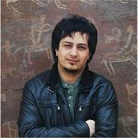
- Born1991
- FromTabriz, Iran
- Works14
- Dated2015
StatementAbout the work
Red carpet
Image, does not have any relationship to any reality. Image is the depiction of itself.
Jean Baudrillard
TV is ruling these days. It has a soft ruling on our brain, beliefs, attitudes, and everything. Image orders us in the way it wishes. This order is a very intelligent ordering that can activate us in the way of consumerism.in affairs of no logical benefit to our growth and perfection, we get involve to its command.
TV creates myths for us; colorful and attractive. We have no choice but to envy them and to from our lives on thesc ideas .
All this becomes more complex and even saddening in the 3 World.
I am distrustful towards these images. I sense a deep feeling of fear towards these images, and I tried to contour these fears.
I am even distrustful towards my images.
Works14 artworks


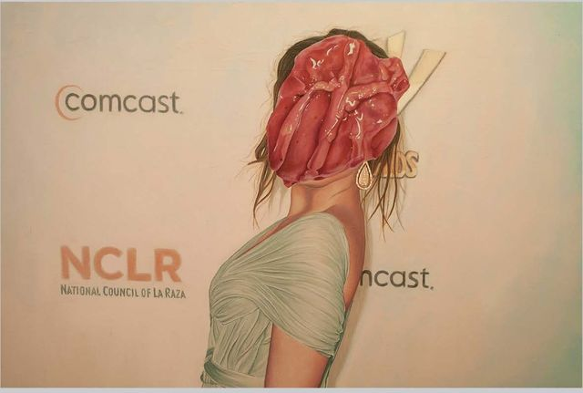

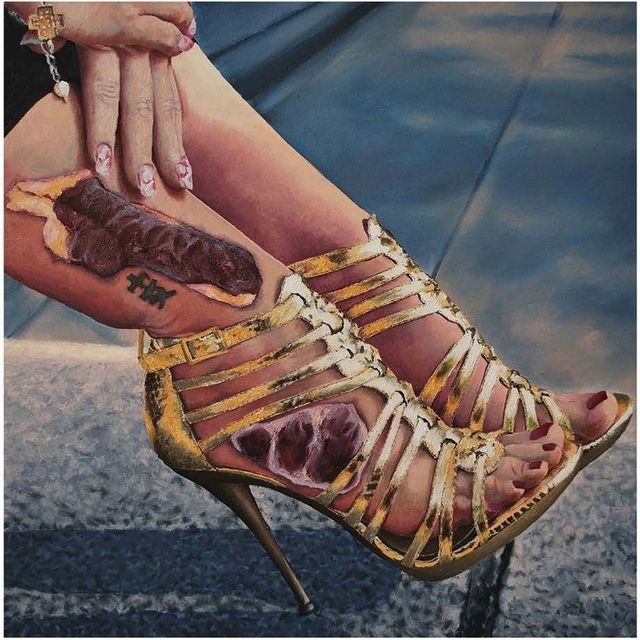

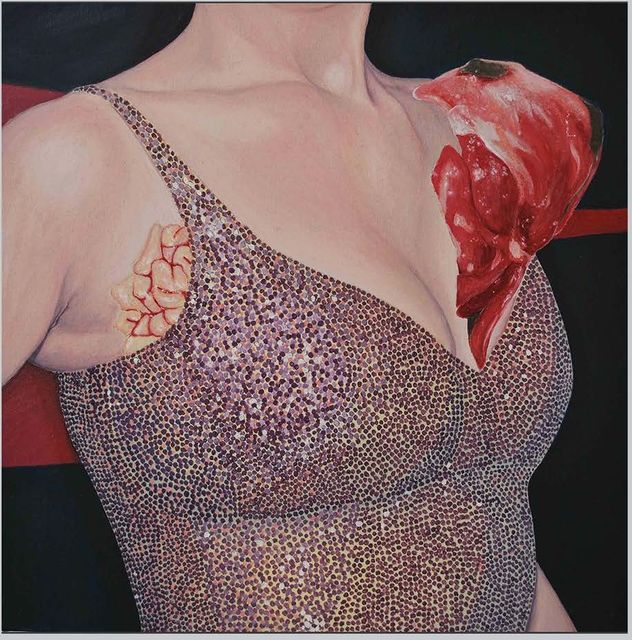

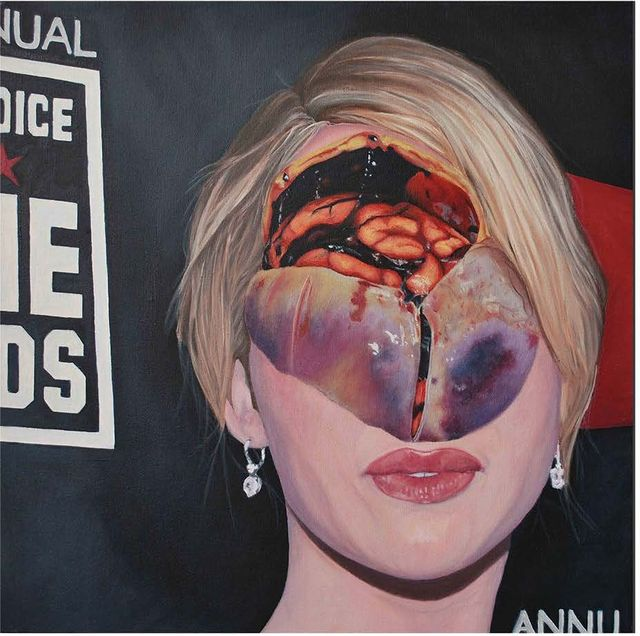

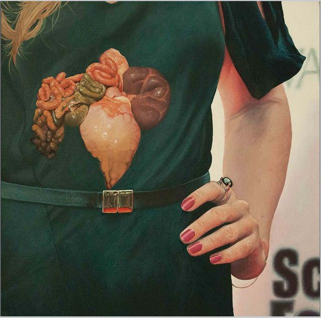

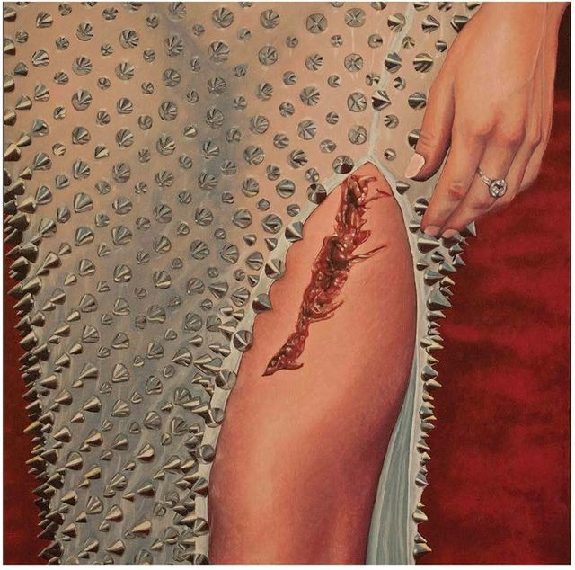

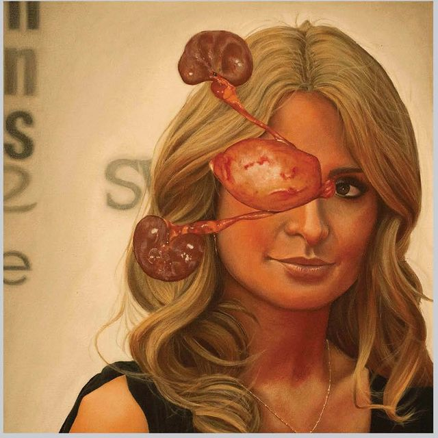

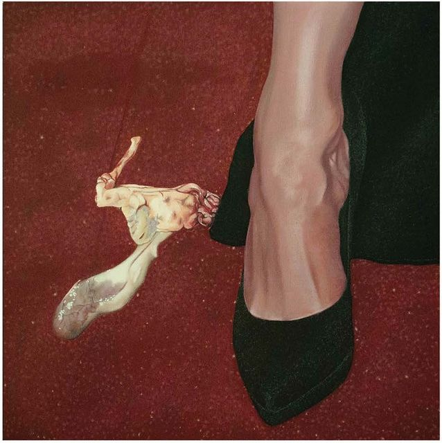

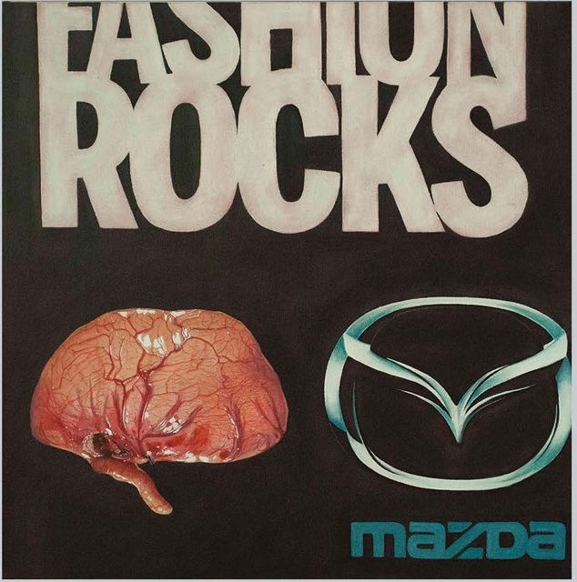

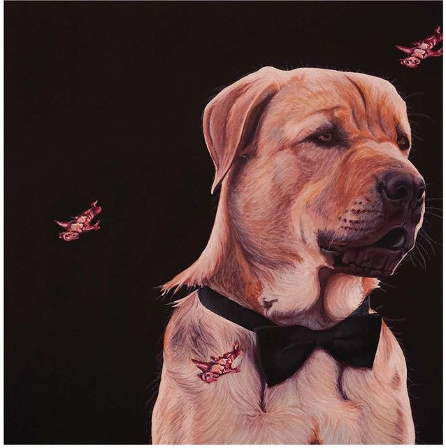

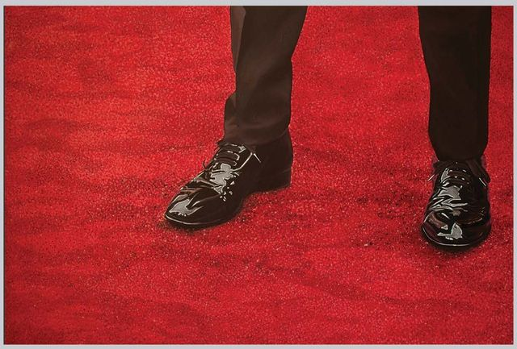

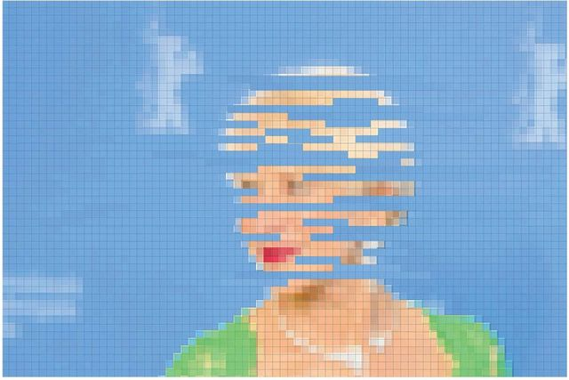

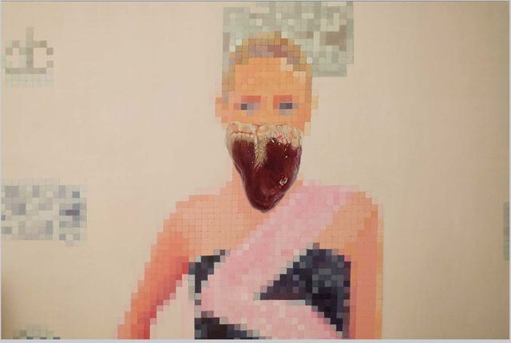
History of experienceBiography · education · exhibitions · awards
Education
- 2009Diploma in graphic, Mirak's Conservatory|Tabriz – Iran
- 2014B.A in painting, Sooreh art University|Tehran – Iran
- 2014Master's student of painting, Sooreh art University|Tehran – Iran
Solo exhibition
- 2016Abi Gallery|Tehran – Iran
Other activities
- 2015Researcher documentary Sultan Mohemmed painter
Source: the Sobhan Gallery artist catalogue “Navid Nami.pdf”.